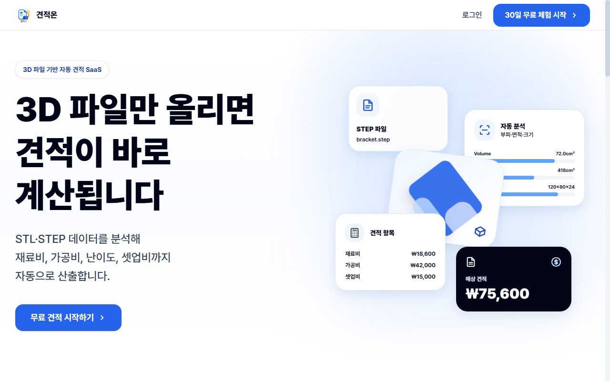
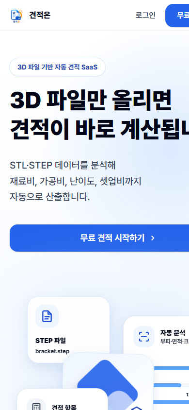
[ B2B SAAS · 3D 견적 ]
PartStream
3D 도면 파일 업로드 즉시 자동 견적 계산 (견적온)
JIUM LABS는 소규모 팀의 일상 업무를 자동화하는 실용적인 B2B SaaS와 비즈니스 가치를 전달하는 고품질 웹사이트를 설계합니다.
명확하고 직관적인 쇼케이스. 자체 개발 SaaS 솔루션과 기업의 가치를 높이는 맞춤형 웹사이트 제작 사례를 둘러보세요.
3D CAD 도면 분석부터 실시간 견적·발주 자동화까지, 팀의 반복 업무를 줄이는 B2B 소프트웨어


3D 도면 파일 업로드 즉시 자동 견적 계산 (견적온)
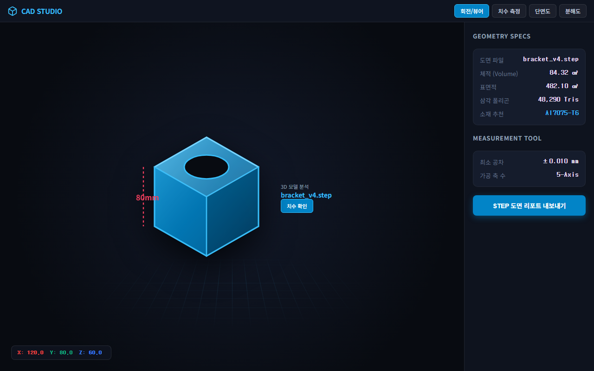
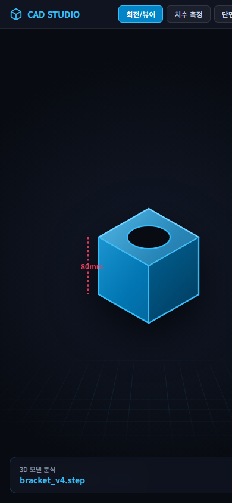
웹 브라우저 무설치 3D CAD 뷰어 & 측정 도구
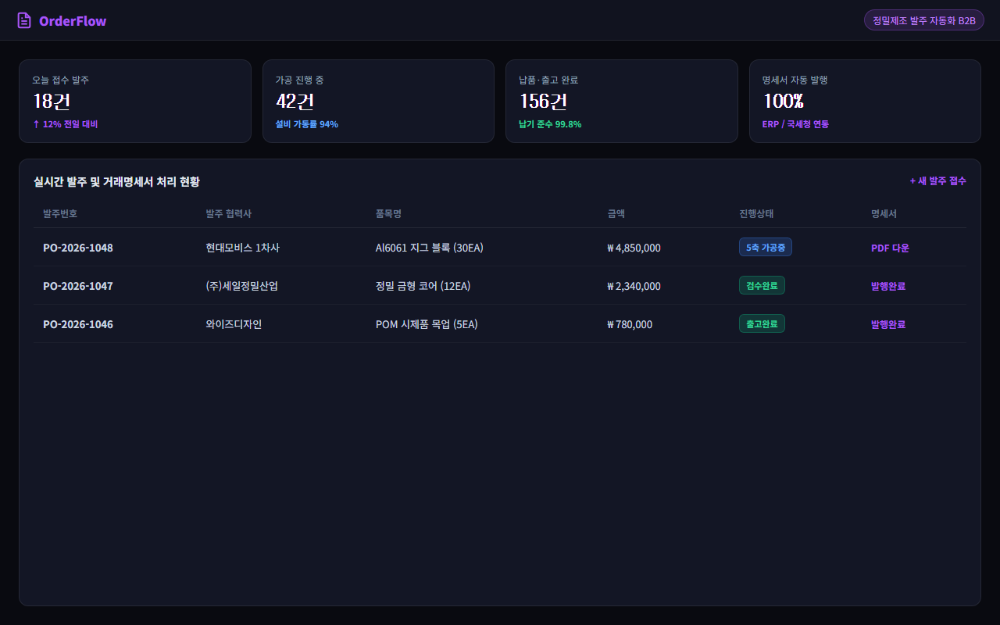
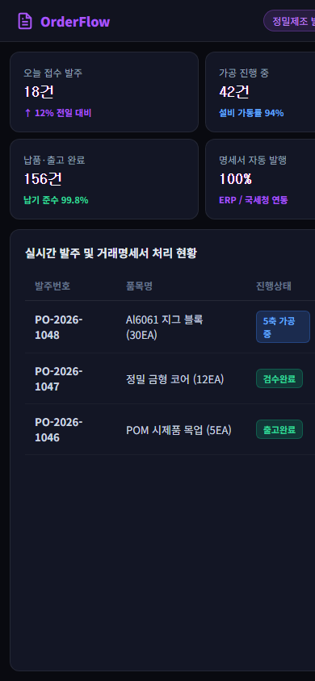
제조·유통 협력사 간 발주 접수 및 거래명세서 자동화
정밀 제조 현장부터 식품 유통까지, 비즈니스의 신뢰와 가치를 직관적으로 전달하는 고품질 맞춤형 웹사이트
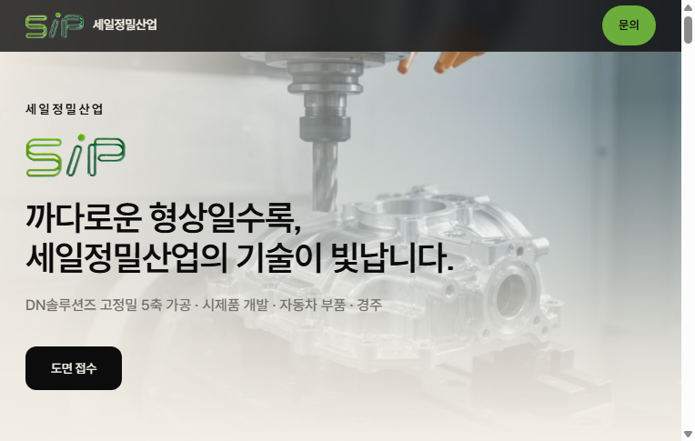
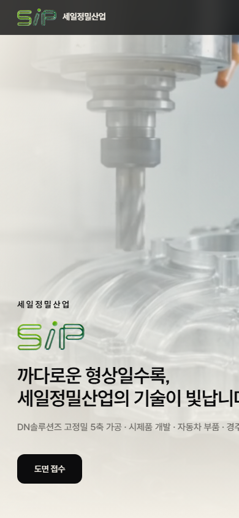
까다로운 형상일수록 기술이 빛나는 5축 정밀가공 웹사이트
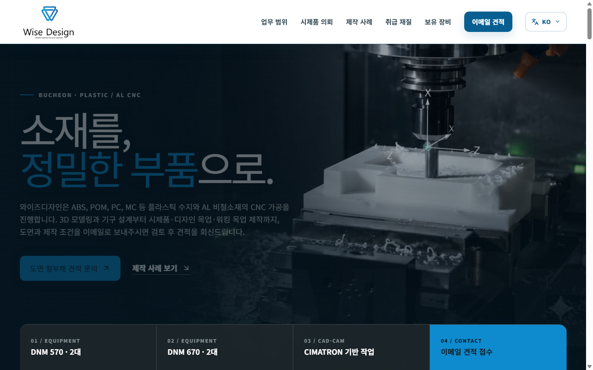
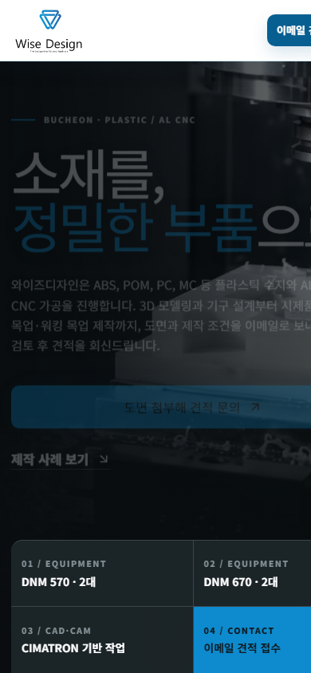
부천 플라스틱 수지 & 알루미늄 CNC 가공 및 시제품 제작
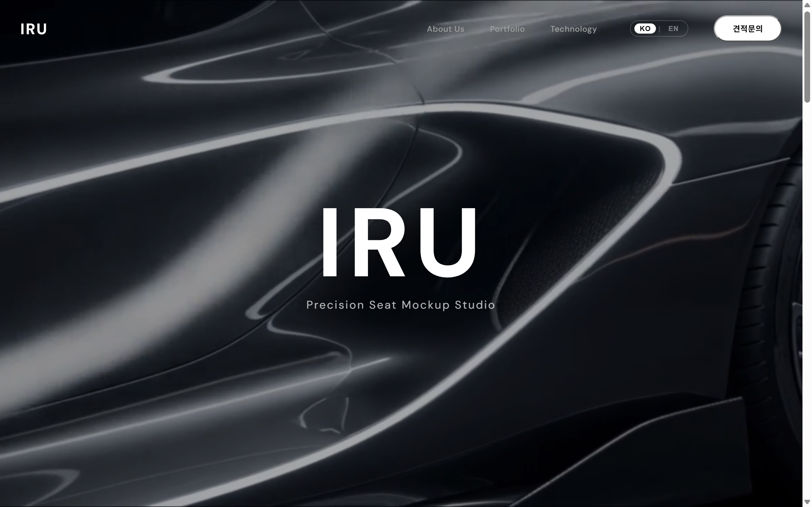
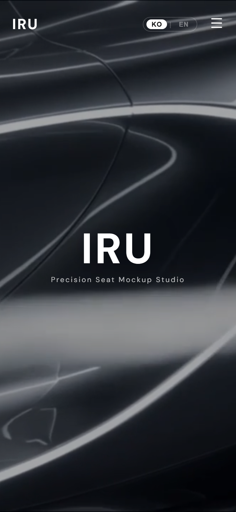
경기도 화성 자동차 시트·내장재 목업 전문 제작 공식 웹사이트
JIUM LABS의 모든 결정은 다음 6가지 원칙에서 출발합니다. 화려한 기능 목록 대신 매일 쓰는 도구의 작은 디테일에 시간을 씁니다.
기능을 무리하게 늘리지 않습니다. 출시한 제품의 안정적인 운영과 지속적인 개선을 지향합니다.
각 프로젝트는 목적과 준비 상태에 맞춰 별도로 운영합니다. 연결 기능은 실제 지원 범위 안에서 안내합니다.
외산 SaaS를 번역하지 않습니다. 한국 팀의 워크플로우와 세무·계약 처리에서 출발합니다.
수집은 최소한으로, 보관은 보수적으로. 처음부터 감사 가능한 구조로 설계합니다.
REST·Webhook·SDK 등 연동 기능은 제품별 준비 상태에 따라 다릅니다. 실제로 제공되는 기능만 각 프로젝트에서 안내합니다.
천 명을 상상하지 않고, 매일 쓰는 한 명을 위해 설계합니다. 그게 결국 천 명에게 닿습니다.
프로젝트마다 필요한 순서와 속도는 다릅니다. 아래는 상황에 따라 조정되는 기본 작업 흐름입니다.
현장 업무에서 마주친 불편과 사용자 의견을 기록해 시작점을 찾습니다.
핵심 흐름을 확인할 수 있는 작은 버전을 만들고 직접 검토합니다.
필요한 범위에서 사용 의견을 받고 기능과 흐름을 다듬습니다.
준비가 끝난 프로젝트부터 공개하고, 확인된 필요에 따라 개선합니다.
지음랩스는 소규모 팀을 위한 운영 도구와 홈페이지를 만드는 스튜디오입니다. 공개된 작업과 준비 상태는 프로젝트 카드에서 확인할 수 있습니다.
네, 정밀가공, 시제품 목업, 제조 기술 기업 등 비즈니스 가치와 신뢰를 명확하게 전달해야 하는 기업의 맞춤형 웹사이트를 제작합니다. 세일정밀산업, 와이즈디자인, (주)이루 등의 구축 사례가 있으며 jiumlabs@jiumlabs.com으로 문의하실 수 있습니다.
3D CAD 도면(STL, STEP)을 업로드하면 체적과 가공비를 실시간으로 자동 산출하는 'PartStream', 무설치 웹 3D 뷰어 'CAD Studio', 발주 및 거래명세서 자동화 파이프라인 'OrderFlow' 등을 개발·운영합니다.
이 사이트에서는 가입이나 결제를 제공하지 않습니다. 이용 가능한 작업은 프로젝트 카드의 링크에서 확인할 수 있고, 아직 공개되지 않은 작업은 준비 중으로 표시합니다.
각 프로젝트의 목적과 준비 상태를 따로 관리합니다. 공개된 작업은 해당 링크로 안내하고, 아직 이용할 수 없는 작업은 준비 중으로 표시합니다.
제품별 연동 범위는 서로 다르며, 이 페이지에서는 공통 인증이나 Webhook 연동을 보장하지 않습니다. 실제 지원 기능은 각 프로젝트의 안내를 기준으로 확인해 주세요.
페이지 하단 이메일 버튼 또는 jiumlabs@jiumlabs.com으로 문의해 주세요. 홈페이지 제작과 SaaS 협업 문의를 확인한 뒤 가능한 범위에서 회신드립니다.
현재 정규 채용 공고는 없습니다. 함께 만들고 싶은 분은 자신의 작업과 함께 메일로 연락해 주세요.
홈페이지 제작부터 SaaS 협업까지, 프로젝트의 맥락을 이메일로 들려주세요.